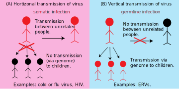
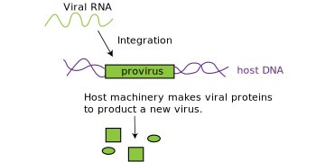
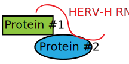

You probably think you’re DNA is mostly human DNA right? After all, DNA is the blueprint for life, so surely most of your genomic real estate must be devoted to coding the genes that make you — you. Surprisingly, this is not the case! Only ~2% of the human genome codes for the proteins that are coded by your DNA and underlie the physical aspects of your body. The rest of your DNA is made up of different fossilized segments that don’t make proteins related to your bodily functions (non-gene elements). An astonishing 8% of your genome is actually made up of viruses, specifically endogenous retroviruses (ERVs) - that's right, 8% of your genome is not human! Here, I'll describe how the ERVs came to dominate so much of our genome, what they are doing there, and how they're thought to influence our early embryonic development.
In order to understand what ERVs are and how ERVs got to be a part of our genome, we need to talk a little bit about viral infection, transmission, and lifecycle, and we need to understand the difference between endogenous viruses and exogenous viruses.
Endogenous vs. Exogenous viruses When you come down with a cold, it means that cold viruses (predominantly rhinovirus, but over 200 types of viruses can result in the common cold), have successfully colonized the epithelial cells of your airways. Unlike most life forms which are able to replicate their own genomes and make their own proteins, viruses are unable to do any of this without the help of a host cell (in this case, the cells in your airway). The viruses use your cells as factories to make a lot of copies of themselves, which they then deploy to infect another host (likely, your significant other, best friend, or coworker). This whole process is called horizontal transmission (Figure 1, Box A) because the viral infection can be passed between two unrelated persons. These viruses are called exogenous viruses because they exist outside of your genome.
 Figure 1: Horizontal vs. vertical transmission of viruses. (A) In horizontal transmission, a virus infects somatic cells and uses cellular machinery to make new viral particles that can infect others. Infected individuals are depicted in red. (B) In vertical transmission, a virus infects the germline cells and the integrated viral DNA in the genome can be passed genetically to offspring.
However, ERVs are endogenous viruses. How is this different from cold viruses? Normally, the viruses that we commonly encounter only infect our somatic cells, that is, those cells in our body that will not give rise to future offspring (Figure 1, Box A). However, some viruses can infect our germline cells (eggs/oocytes in females and sperm in males), and if they are able to integrate their genetic information into these germline cells, their information will be passed onto all the cells of the next generation (Figure 1, Box B). This is called vertical transmission because the virus is passed between related people - or inherited - via the genome. These viruses are termed endogenous viruses because their genetic information becomes part of the host genome.
Retroviruses- making RNA cool again The term ‘retro’ is used to mean back - in viruses this term is used to describe how the virus stores and uses its genome. A retrovirus has an RNA based genome (this is different from most other life forms which have DNA genomes). When a retrovirus infects a cell, it must copy its RNA genome, which is unstable and is easily degraded, into the more stable form of DNA using a protein called a reverse transcriptase. This DNA is then added directly into your genome. These integrated versions of the retrovirus are known as the provirus. Once the provirus is in the genome, the host cells can express the protein components of this virus. In this way, the virus, which normally has no ability to make its own proteins, is able to make its protein components by hijacking its hosts’ energy and machinery. This is the very strategy that the HIV virus uses. The life cycle of retroviruses (Figure 2) explains how they can participate in vertical transmission- if they integrate their genetic material into a germline cell, all of the host offspring will also have the viral integration.
 Figure 2: Simplified lifecycle of a retrovirus. A retrovirus has an RNA genome that integrates into the host genome to make a provirus. This proviral DNA is then transcribed and translated by the host.
Endogenous retroviruses (ERVs) are ancient proviruses that have been trapped in our genome for many generations - in fact, most of them have been trapped in our genomes across evolutionary history. We share the same proviruses with many vertebrates. Once integrated, there is no known mechanism to get rid of them, so they accumulate over millions of years. However, only a few of these elements are still ‘active’ today. For a proviral element to be considered active it must have the ability to form a viral particle from the genes coded in the provirus. Scientists hypothesize that so few of these ERVs remain active because there is little evolutionary pressure preventing these sequences from being mutated. In contrast, if a fundamental gene in your body obtained a lethal mutation no viable children would result and the mutation would not be passed on; these genes are therefore much more conserved, or in other words, much less mutated. In the provirus, however, a mutation that destroys ability to make a full viral particle might not negatively impact the human and therefore isn't selected against. It is possible that these mutations are actually beneficial to the host, because now virus cannot be produced.
In the early days of genome biology, some scientists believed that these ERVs were just a part of our genomic junk with no true function or purpose. However, recent findings from Stanford scientists and others suggest that there might be more to ERVs. It appears that over the million years that ERVs have been part of vertebrate genomes, they have been co-oped to play important roles in our biology.
Among the most interesting of these findings is the role of ERVs in development. The three vignettes below are examples of three broad ways that ERVs can affect you and your biology, including 1) changing how genes are expressed, 2) augmenting responses to other viruses and 3) changing how your cells interact with each other.
Changing gene expression
Since ERVs take up so much genomic real estate, you can imagine that with some frequency they will be close enough to your protein coding genes that they might influence the expression of those nearby genes.
One recent study focused on the role of ERVs in embryonic stem cells - the cell types that give rise to all the cell types of the developing embryo. Studies using high-throughput RNA-sequencing (a technique that allows you to detect which RNAs are present in the cell, representing which genes are being expressed) of human embryonic stem cells (hESCs) have determined that a family of retroviruses called HERV-H (human ERVs, family H) have a large number of RNA copies in hECS. This struck the team as curious because there are many cellular mechanisms to prevent these elements from being expressed and wreaking havoc on the human genome by integrating everywhere. Yet, in these most important of cells, HERV-Hs were highly expressed.
To better understand their function, scientists used molecular tools to specifically decrease the expression of these elements. To their surprise, they saw that once the cells lost the expression of the HERV-Hs, they also lost their embryonic stem cell properties, including their physical appearance and the ability to make other cell types. To test this idea further, they also looked at the behavior of HERV-H during induced pluripotent stem cell reprogramming (briefly, turning a differentiated adult cell into a stem cell) and saw that as the adult cells became ‘stem-cell-like’ they were turning on HERV, just like the embryonic stem cells. This suggested that one of the necessary components of being a pluripotent stem cell was to have HERV-Hs expressed! But why?
Lu et al. discovered that one of the roles for these HERV-H RNAs is to function as ‘loading’ devices that can bind and capture several important proteins to make a complex (Figure 3). The proteins that the HERV-H captures are known to be critical for stem cells to function. Once this complex is formed, it can turn on essential genes that the hESCs need to maintain their pluripotent, stem cell state. In the absence of the HERV-H RNA, those genes were no longer expressed and the cells could no longer remain stem cells. In essence, the HERV-H RNA acts like a tether, tying these protein factors together to keep them the same place at the same time. This illustrates how although ERVs may have been random passengers in the human genome millions of years ago, they have slowly been co-opted by our genome’s regulatory circuits to play important roles.
 Figure 3: HERV-H RNA helps to make a complex between proteins that are important for maintaining the stem cell state. In this way, the HERV-H RNA acts like a tether for the two proteins. When the RNA is lost, the stem cell state is also lost.
ERVs help embryos respond to other viruses Another interesting family of retroviral element is the HERV-K family. They are the most recently acquired viral insertions in our genomes and many of them still retain their original proteins without any (or many) mutations. Although some of these proviruses are found in other primates, many of these insertions are unique to the human genome, and may help to explain some features that make us ‘human’. About 48% of these human-specific HERVK insertions are polymorphic between human populations, meaning that you and your neighbor likely have slightly different sequences. This led scientists to hypothesize that the overall differences between you and your neighbor may have something to do with those HERVKs. However, one key question remained: given that these HERVKs had so few mutations, could they still make real viral particles? Furthermore, could these viral particles influence anything?
A team from Stanford University, headed by Dr. Joanna Wysocka, set out to answer this question. Using a combination of techniques, including transmission electron microscopy (a technique that takes ultra-high magnification images), her team was able to detect viral particles in human embryonic stem cell lines as well as blastocyst stage embryos. These images provided the first concrete evidence that HERVKs could make real viral particles inside developing human cells.
What role might these activated retroviruses play? One hypothesis was that HERVKs help to prepare the developing blastocyst (an early embryo) against viral infections from other viruses. One of the proteins coded for in the HERVK provirus is Rec, which is related to the protein Rev. In many viruses, Rev is responsible for promoting release of viral RNAs from the nucleus to the cytoplasm where they can be translated. This is important for the virus because your cell isn’t setup to translate viral RNAs or make sure they get into the cytoplasm. By forcing this to happen, the virus ensures its own propagation. Rec does the same thing in the developing blastocyst. However, when these viral RNAs are exported, they also cause an immune reaction in the cell (not mediated by the immune system, since it hasn't been developed yet) and it triggers an innate antiviral response. For example, Rec causes the embryos to make a protein called IFITM1 that serves to block viral infection of the cells. To test this idea further, Wysocka’s team depleted the Rec protein from cells and found that they were more susceptible to viral infection with influenza than the control counterparts. Thus, quite ironically, this dormant virus is helping the earliest version of you fight off other viruses!
A role for viruses in placental growth and fetus implantation
While ERVs are found in our genome, and thus in the DNA of each of your cells, they are most abundantly expressed (i.e made into RNA and protein) in the placenta and extraembryonic tissues. Evidence from the last decade of research suggests that a protein derived from the ERVs, syncytin, is responsible for fetal implantation to the uterus during development.
First, to recap the biology of pregnancy: after the oocyte is fertilized and the zygote grows into a little ball of cells, it needs to implant into the the wall of the uterus and establish a connection with the mother so that it can exchange nutrients and oxygen. Enter the placenta - an extraordinary organ which is developed during pregnancy to help the baby develop. This critical tissue is teaming with active HERVs. The crucial place where the placenta meets the mother’s uterine wall is made by a layer of cells called syncytiotrophoblasts and these cells express a lot of syncytin, the protein that mediates the fusion between embryo and the mother.
Syncytin belongs to the same family of Env proteins expressed by HERVs as the proteins that make up the viral protein coat. It is responsible for fusing host cells together, facilitating the spread of a viral infection between cells. However, this molecular process was hijacked during the evolution of placentas in mammals. Using the viral syncytin protein, the syncytiotrophoblasts can attach to the uterine wall using a similar fusion mechanism. In fact, if the mouse equivalent is disabled during pregnancy, the embryo never implants into the uterine wall, which indicates that syncytin is critical for embryonic implantation. Different versions of this protein have been found in many mammals, illustrating its importants.
In humans, both syncytin 1 and 2 exist. Syncytin 1 has been tied to implantation, while syncytin 2, which is also viral derived is believed to have a role in preventing the mother from having an immune reaction to her baby. The developing fetus contains 50% foreign DNA (from the father) that the mother can react to as “pathogenic” and mount an immune response to, potentially killing the baby. However, syncytin 2 is thought to have a role in preventing this aberrant response. The explanation has to do with to the original identity of these retroviruses, which are often immunosuppressive, meaning that they prevent the host’s immune system from attacking the virus. The source of this immunosuppression is a protein sequence called ISD (immunosuppressive domain) that is found on the envelope protein of most retroviruses and syncytin 2. To be clear, there are many other mechanisms that also help to prevent an immune reaction between the baby and the mother. However, growing evidence suggests that ERVs and other retroviral elements have a huge role to play in this process.
The overarching theme of the study of ERVs in our genome is that our cells have been able to adapt or evolve new functions for these fossils “guest” proteins in our genome by expressing part of the provirus and hijacking its function for the cell’s own use. These examples illustrate how evolution can work - taking raw genetic material and adapting it for new purposes that are somewhat reminiscent of the original function. This also helps explain why we haven’t pruned out much of this fossilized DNA. It is not much of a fossil at all, but a necessary part of our genome that is critical for life. As more experiments explore the function of ERVs we will no doubt find additional processes in which they are involved.
Fascinated by this ‘dark matter’ in your genome? Here are some additional books on the topic:
The Deeper Genome: Why there is more to the human genome than meets the eye. - John Parrington
Junk DNA: A Journey Through the Dark Matter of the Genome. - Nessa Carey
Editorial note by the author: I personally object to the term ‘junk DNA’. After having studied transposable elements and other non-coding elements of the human genome, it’s clear that though we don’t always understand what they are doing, they are doing SOMETHING. Evolutionary pressure selects for traits in interesting ways. The coining of the term ‘junk DNA’ years ago reflected our ignorance and lack of understanding of the human genome, not the fact that it’s actually junk.
Barbulescu et al. 1999. “Many human endogenous retrovirus K (HERV-K) proviruses are unique to humans.” Current Biology 9(16): 861-868.
Chuong 2013. “Retroviruses facilitate the rapid evolution of the mammalian placenta.” Bioessays 35(10): 853-861. emphasized text Grow et al. 2015 “Intrinsic retroviral reactivation in human preimplantation embryos and pluripotent cells.” Nature 522: 221-225.
Lander ES et al. 2001. “Initial sequencing and analysis of the human genome.” Nature 490: 860-921.
Lu et al. 2014. “The retrovirus HERVH is a long noncoding RNA required for human embryonic stem cell identity.” Nature Structural and Molecular Biology 21(4): 423-425.
Robbez-Masson and Rowe 2015. “Retrotransposons shape species-specific embryonic stem cell expression.” Retrovirology. 12:45.
Rowe and Trono 2011. “Dynamic Control of Retroviruses during development.” Virology. 411: 273-287.
Schlesinger and Goff 2015. “Retroviral Transcriptional Regulation and Embryonic Stem Cells: War and Peace.” Molecular and Cellular Biology. 35 (5): 770-777.
Shin 2013 “Human-Specific HERV-K Insertion Causes Genomic Variations in the Human Genome.” PLoS One 8(4): e60605.
Stoye 2012. “Studies of endogenous retroviruses reveal a continuing evolutionary saga.” Nature Reviews Microbiology 10: 395-406.